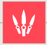

DUELIST --
Representing her home country of South Korea, Jett's agile and evasive fighting style lets her take risks no one else can. She runs circles around every skirmish, cutting enemies before they even know what hit them.
An agile fighter who prioritizes movement over everything. Her abilities include a teleportation-based dash and an updraft that lets her reach higher ledges. She also has a smokebomb ability to hinder sightlines and a powerful Bladestorm ultimate that deals moderate-to-heavy damage and remains accurate even while she's moving. Jett is one of the few Agents with a passive ability. Holding the jump key while in the air will allow Jett to slow her descent.
Jett's Ultimate allows her to wield several throwing knives that deal moderate damage and kill on headshots. Getting a kill replenishes your daggers and you can choose to throw them one at a time or throw all remaining daggers in a short-ranged burst.
Q - UPDRAFT -- INSTANTLY propel Jett high into the air.
E - TAILWIND -- INSTANTLY propel Jett in the direction she is moving. If Jett is standing still, she will propel forward.
C - CLOUDBURST -- INSTANTLY throw a projectile that expands into a brief vision-blocking cloud on impact with a surface. HOLD the ability key to curve the smoke in the direction of your crosshair.

X - BLADE STORM -- EQUIP a set of highly accurate knives that recharge on killing an opponent. FIRE to throw a single knife at your target. ALTERNATE FIRE to throw all remaining daggers at your target.